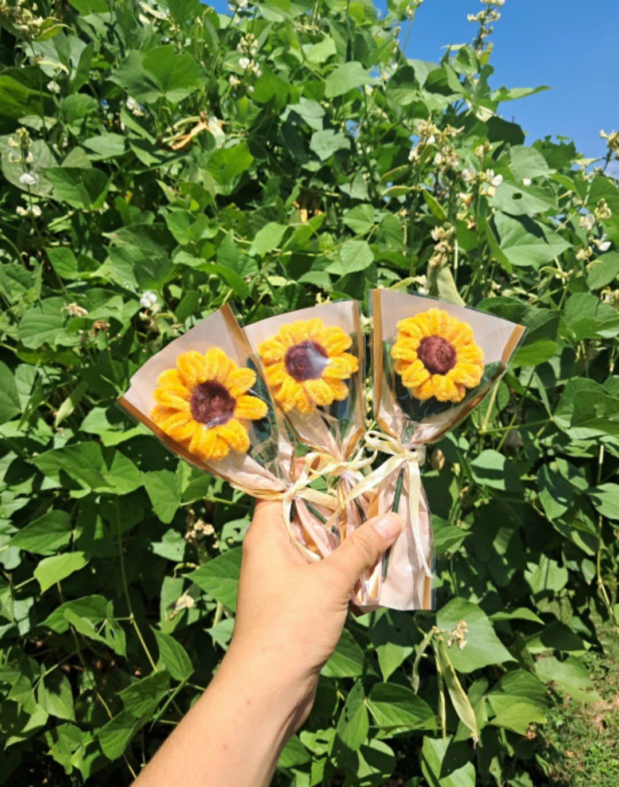

Angelica Ramos Estacio
Bachelor of Science in Computer Science
Aspiring Software Developer • Entrepreneur • Creative Designer • Future IT Professional
Aspiring Software Developer • Entrepreneur • Creative Designer • Future IT Professional
As you explore this portfolio, you will discover my academic journey, technical knowledge, project experiences, and entrepreneurial endeavors. Each section reflects my dedication to learning, creativity, and personal development. This portfolio serves as a representation of who I am today and the professional I aspire to become in the future. 💜✨
I am Angelica Ramos Estacio, a Bachelor of Science in Computer Science student from Don Mariano Marcos Memorial State University South La Union Campus.
Born on September 9, 2005, I am passionate about technology, software development, entrepreneurship, and continuous learning.
I enjoy coding, designing systems, creating handmade crafts, and developing innovative solutions through technology.
During my On-the-Job Training at DEFEMNHS, I gained practical experience in inventory management using Microsoft Excel and manual recording systems.
This experience enhanced my communication, leadership, adaptability, teamwork, and organizational skills.

Angel's Crafty is my small business specializing in handmade bouquets, fuzzy wire crafts, keychains, and gift items.

Soft, adorable, and perfect gifts.

Handmade fuzzy wire bouquet.

Cute and elegant handmade keychain.

Perfect for birthdays and gifts.

Bright and cheerful floral craft.
📱 09453996037
📧 angelestacio767@gmail.com
💜 Facebook: Angelica Estacio
🌸 Business Page: Angel's Crafty
📍 Agoo, La Union